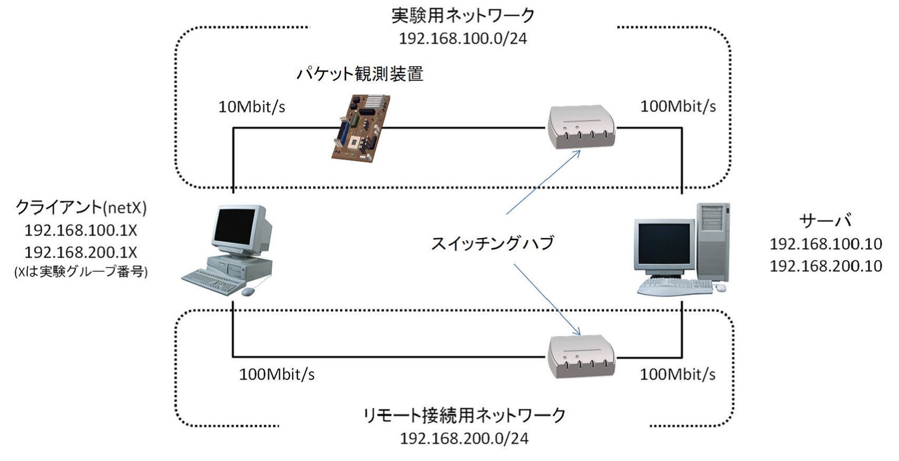

実験要領#
1 はじめに#
実験日前に，本指導書をよく読んで「何が分からないのか」が明確にしておいてください．また，実験データの持ち出しのために，実験当日はUSBメモリを持参してください．
実験を実施して分かることが多数あると思います．また，それが実験の目的でもあります．分からないことは，TAなどに質問してください．質問の際には，指導書の「この部分が分からない」と明示的に指摘して質問して下さい．
実験室は他の講義でも使用されるため，毎回実験システムの設置と片付けが必要です．各回で予定された実験が終了したら，その旨をTAに申告しその回の終了確認を受けてください．
2 目的#
Ethernetにおける実効伝送能力をさまざまな環境で計測し，実際のネットワークにおける伝送性能を理解する[1]．
3 実験概説#
本実験では実効伝送能力の測定対象として，EthernetとWi-Fiを用いる．Ethernetとは，コンピュータ間で通信を行うネットワーク規格の1つである．一般家庭やオフィスなどでLAN(Local Area Network)を形成するために用いられている．種類として主に10BASE-T，100BASE-TX，1000BASE-Tなどがある．10BASE-Tの意味は，10(10Mbit/S) Base (band) - T (Twisted pair)である．最大で毎秒10Mbitのデータを伝送することが可能である．しかし実際に伝送可能なデータ量は，伝送方法や伝送環境により大きく異なる．また，Wi-Fiとは無線通信でLANを形成する規格である．
本実験では，ネットワークプロトコルとしてTCP/IPとUDP/IPを比較する．また，伝送環境として，直接通信を行う場合とルータやWi-Fiを介して伝送する場合を扱い，それらの伝送性能について比較を行う．
4 コンピュータネットワーク (Ethernet) (予習)#
コンピュータネットワークは，多くの階層から構成されている(表 1)．一番下は，物理層である．最近は，Ethernetでは，100BASE-TXおよび1000BASE-T方式がよく利用されている．このとき，物理層のケーブルは，「より対線」であり，そこに流れる電気信号は，ディジタル論理値の0/1を電圧に割り当てて表現している．これはAMラジオで，搬送波を振幅変調しているのと似ている．（一方FMラジオでは搬送波を周波数変調している．）Baseの意味は，基本信号周波数（ベースバンド）のまま伝送することである．上記物理層の上にデータリンク層としてEthernetが実現されている．Ethernetは，多重アクセスプロトコルとしてCSMA/CD方式を採用している．
Ethernetでは，ホストAから送出されたデータは，同じEthernetに繋がっている全ホストへ届けられる．つまり「1対全」の通信であり，ホストAはホストB宛てのデータを送出しても，関係の無いホストCやDにも届いてしまう．つまり，任意のホストAとBとの1対1のみでの通信は不可能である．各端末を区別するためにイーサネット機器は全て固有のMACアドレスを持つ．ホストCおよびDは一旦受け取るが自分宛てのデータでない為，これを廃棄する．
階層 |
説明 |
|---|---|
第7層 |
アプリケーション層：ユーザが操作するインターフェース． |
第6層 |
プレゼンテーション層 |
第5層 |
セッション層 |
第4層 |
トランスポート層：ネットワークにおける通信管理． |
第3層 |
ネットワーク層：ネットワークにおいて通信経路の選択． |
第2層 |
データリンク層：通信機器間の直接的な信号の受け渡し． |
第1層 |
物理層：電気信号の変換等． |
また，「1対全」の通信であるため，既にホストAとBが通信している時にホストCが新たにデータを送出すると，データの衝突(コリジョン)が発生してしまう．コリジョンが発生すれば通信は成り立たない．Ethernetでは，コリジョンを回避するためにデータ送出の手順が決められている．まずホストは，自分の繋がっているEthernet内でフレーム (データ)が流れていないか確認する．もし既に別のホストが通信していれば，ランダムの時間だけ待って再び確認する．フレーム(データ)が流れていなければ，自分のフレーム
(データ)を送出する．しかし別のホストも同時に送り出していたら，ここでコリジョンが起こる．コリジョンを検知したホストは，ランダムの時間待ち，再度同じフレームを送出する．これがCSMA/CD(Carrier Sense Multiple Access / Collision
Detection)と呼ばれる通信方式である．
同じデータが到達するネットワークをコリジョンセグメントと言い，物理層により全体の長さが固定されている．それ以上の規模のネットワークを構築する場合，ブリッジ，もしくはそれが多ポート化したイーサネットスイッチ（スイッチングハブ），ルータ等を用いてネットワークを分割しなければならない．
ネットワークの形は，最初に標準化された10BASE-5や，10BASE-2などは，バス型ネットワークを構成していたが，現在，普及している10BASE-Tや100BABE-TXおよび1000BASE-Tなどでは，スイッチを介してスター型につなぐ方式になっている．
現在では有線のEthernetでは全二重通信＋スイッチングハブが主流であり，CSMA/CD方式は実質的に使われなくなっている．ただし，無線LAN(Wi-Fi) では類似のCSMA/CA(CollisionAvoidance)方式により，信号の衝突を回避した多重アクセスが実現されているため，現在においても重要な概念である．
本実験は主に次の3テーマで構成される．
ネットワーク構成の理解と基本特性の計測
Ethernetケーブル上を伝わる信号の観測
サーバ，クライアント間を直接接続した場合の応答時間，パケットロス率，伝送速度の観測
100BASE-TXを用いた計測，およびルータの役割の理解とそれを介した計測
伝送速度を100Mbpsに変更した際の応答時間，パケットロス率，伝送速度の観測
サーバ，クライアント間通信において，ルータを介した場合の応答時間，パケットロス率，伝送速度の観測
Wi-Fiの理解とそれを介した計測
サーバ，クライアント間通信において，Wi-Fiを介した場合の応答時間，パケットロス率，伝送速度の観測
詳細は実験時に説明を行う．
5 実験システム#
実験システムの物理構成図を図 1に示す．実験システムは，各グループに1台の計算機(クライアント)と全体で1台の計算機 (サーバ)で構成される．各グループで見ると，目の前にある1台のクライアントと，少し離れた場所にある1台のサーバ，およびそれらを結ぶケーブルから構成される． サーバは，片方向200Mbit/sのバンド幅[2]を持っている．これをクライアント7台（図 1では1台のみ図示)で共有している．クライアントの実験用ネットワークインターフェースを10Mbit/sに設定した場合，サーバは，各クライアントあたり，約28Mbit/sのバンド幅を持っている．ゆえにサーバ側のバンド幅は，全クライアントの実験用ネットワーク接続からの伝送パケットを受信するのに十分である．

この実験では実験用とリモート接続用の2つのネットワークを使用する．前者はpingコマンドなどを使用してパケットを伝送するネットワーク(192.168.100.0/24)で，パケット観測装置を介してサーバに接続する．後者はサーバへリモート接続し，サーバ側の設定確認およびnc，recvコマンドの実行などを行うためのネットワーク(192.168.200.0/24)である．上記の様に，リモート接続用に別のネットワークインターフェースが準備されているため，実験用ネットワーク接続はリモート接続の影響を受けない[3].
以降，実験内容について詳述していく．なお，実験システムは，通信内容の観測等を行う実験などでネットワークの健全性を阻害する可能性があるために，大学のネットワークや外部とは一切接続されていない．データなどを回収記録するためにUSBメモリなどを利用すること．また，実験手順において[Screenshot保存]と記載がある箇所は，ScreenshotをUSBメモリに保存すること[4]．実験終了時には，保存したScreenshotを用いて，行った実験内容の確認をTAが行う．
6 ネットワーク構成の理解と基本特性の計測（1日目）#
本実験では，サーバ-クライアント間を直接接続した場合の応答時間およびパケットロス率を計測する．また，Ethernetケーブル上を伝わる信号をオシロスコープにより観測する．最後に伝送速度をTCP伝送の場合とUDP伝送の場合に分けて計測する．
6.1 実験手順#
まず，ネットワークケーブルを接続する．実験用ネットワーク用とリモート接続用ネットワークの2本を接続する．実験用ネットワークは，クライアントの拡張インターフェース側から，サーバの拡張インターフェース[5]側（図 2参照）に接続されているスイッチングハブに接続する．使用するケーブルは，パケット観測装置が搭載されたケーブルを用いる．リモート接続用ネットワークは，クライアントのマザーボード上のビルトインインターフェース側（図 2参照）から，サーバのビルトインインターフェース側に接続されているスイッチングハブに接続する．ケーブルをスイッチングハブに接続するときはグループ番号と同じポートに接続すること．端子と穴を良く見ると差し込み方向が確認できる．ロックされるまでしっかりと差し込むこと．抜くときには，レバー（図 3）を押さえて，ロックを解除して抜くこと．（無理に抜くと壊れる！）

図 2: PC裏側のEthernet接続の様子

図 3: ケーブルコネクタ
クライアントの電源を投入して，ログインユーザ名・パスワードは共に“netX”（小文字．Xはグループ番号）である．図 4はログイン後のデスクトップ画面である．本実験で使用するショートカットアイコンが並んでいる．なお，図 4左下の丸印部分をスタートボタンと呼び，右下の丸印部分を通知領域と呼ぶ．

図 4: ログイン後のデスクトップ画面
コマンド使用の確認
WindowsのコマンドプロンプトとCygwinのターミナルを併用する．双方ともデスクトップ上のショートカットアイコン（図 5）から起動可能である．
図 5(a): Windowsコマンドプロンプト
図 5(b): Cygwinターミナル主なコマンドは以下で実行する．使用方法を確認する．
ping: Cygwinターミナルで実行する．使用方法は“man ping”で確認できる．
nc: Cygwinターミナルで実行する．使用方法は“man nc”で確認できる．
ipconfig: Windowsコマンドプロンプトで実行する．使用方法は“ipconfig/?”で確認できる．
ネットワークインターフェースを設定
まず，実験用ネットワークの設定を行う．スタートボタンを右クリックし，一覧の中から「ネットワーク接続」を選択する（図 6(d)）．表示されたネットワーク接続の一覧の中から設定を行いたいアイコン[6]を選択し，右クリックを行い，「プロパティ」を選択する（図 6(b)）．表示されたイーサネットのプロパティ画面から，「インターネットプロトコルバージョン4（TCP/IPv4）」を選択し，「プロパティ」をクリックする（図 6(c)）．表示されたプロパティ画面において，「次のIPアドレスを使う」を選択し，次のように明示的に指定する（図 6(d)）．実験用IP：192.168.100.10+X サブネットマスク：：255.255.255.0ここでXは，実験グループ番号（例：グループ5であれば192.168.100.15）．同様に，リモート接続用ネットワークの設定を行う．リモート接続用IP：192.168.200.10+X サブネットマスク：：255.255.255.0

(a) スタートボタン右クリック
(b) ネットワーク接続画面
(c) イーサネットのプロパティ
(d) ipv4のプロパティ図 6: ネットワークインターフェースの設定 ネットワークのIPアドレスの確認
クライアントのコマンドプロンプトを開き，ipconfigを用いて実験用ネットワークとリモート接続用ネットワークのIPアドレスなどが設定されたかを確認する[Screenshot保存]．ネットワーク通信タイプの設定
前述の図 6(a)および6(b)を経て，イーサネットのプロパティ画面において，「構成」を選択する（図 7(a)）．プロパティ中の詳細設定のタブを選択し，リスト中の「Speed&Duplex」を選択する．値を所望の値に変更する（図 7(b)）．実験用ネットワークは「10 Mbps Half Duplex」に，リモート接続用ネットワークは，「Auto Negotiation」に設定する[Screenshot保存]．
(a) イーサネットのプロパティ（構成へ）
(b) プロパティの詳細設定図 7: ネットワーク通信タイプの設定 サーバにリモート接続
ネットワークケーブルの接続を確認して，サーバのビルドインネットワークインターフェース側にリモート接続用ネットワークが接続されていることを確認する．また，サーバの拡張インターフェース側に実験用ネットワークが接続されていることを確認する．クライアントのデスクトップ上にある「リモートデスクトップ接続」アイコンをクリックする（図 8）．接続先としてサーバのIP(192.168.200.10)を入力して接続する（図9）．
図 8: リモートデスクトップ接続アイコン
図 9: リモートデスクトップ接続開始画面サーバの実験用インターフェースとリモート接続用インターフェースのIPアドレスなどを確認するために，リモート接続したサーバ上のコマンドプロンプトを利用し，ipconfigを用いて接続状態を確認する[Screenshot保存]．
応答時間[7] ，パケットロス率の観測
クライアント上のCygwinターミナルにおいて，ping[8]コマンドを用いて， 応答時間・パケットロス率をそれぞれ計測する[Screenshot保存]．使用例：ping -fq 192.168.100.10 1000 10000適当に大きなパケットサイズとパケット数を指示しないと，差異が明らかになりにくい．
パケットの観測
オシロスコープでパケット観測装置の端子（図 10 中丸印）にオシロスコープのプローブを接続[9]し，直接観測する．ping -f 192.168.100.10などとして，連続してパケットが送信されるようにして観測すると，容易に観測できる[Screenshot保存]．オシロスコープは適当なレンジに調整すること．オシロスコープの画面をUSBメモリに保存する（保存の仕方は配布されたオシロスコープの取扱説明書を参照）．また，パケットの電圧を観測し，記録すること．伝送は，交流信号で行われているので全振幅を観測すること[10]．

図 10: パケット観測装置
伝送速度の観測 Cygwinターミナル上のコマンドnc[11]，send[12]，recv[13]を用いて，送信パケットデータの生成および受信パケットデータの計数を行い， 伝送速度[14]を計測する. [Screenshot保存] 送信側はクライアント，受信側はサーバとする．
複数の実験グループが運悪く同時に計測するとサーバのプロセッサ能力の制限からネットワークの最大実効速度が出ないので何度か計測し，他のグループの干渉がないことを確かめること．また，安定した観測値を得るために，recvで観測パケット単位および観測時間は，十分大きくしておくこと．当然，sendで送るデータ総量もそれに見合うものとする．10Mbpsのネットワークを通じてどの程度のデータが送れるかを考える．観測時間は，20秒以上あると結果が分かりやすい．計測結果は，開始直後など動作が安定しない部分を除いてまとめること．コマンドの使用例および受信側の計測結果例を以下に示す．
送信側使用例：send 100 `|` nc -v -n 192.168.100.10 1000X
受信側使用例：nc -v -l -n 1000X `|` recv 20 1000
※Xは自身のグループ番号受信側計測結果例：秒 受信バイト数/秒 総受信バイト数
2 999 999
3 925074 926073
4 2572425 3498498
…
11 4678317 37733229
12 4898097 42631326
13 4776219 47407545
…
20 5144850 82026891UDP伝送の場合の測定 これまでの測定はTCP伝送の場合であった．ここでは，手順（10）を参考にして，UDP[15]伝送の場合の 伝送速度を計測する[Screenshot保存]．UDPでの伝送方法についてはncコマンドのヘルプを確認すること．なお，send中に停止するときは，Cygwinターミナル上で“Ctrl”+“c”をキー入力する．
6.2 考察内容#
以下の観点からの考察を行うこと．
伝送速度の理論値と実測値との比較
TCP伝送とUDP伝送との伝送速度の比較
7 100BASE-TXを用いた計測，およびルータの役割の理解とそれを介した計測（2日目）#
本実験では，1日目の実験（6章）のネットワーク通信タイプを「100 Mbps Full Duplex」に変更して実験を行い，その際の応答時間，パケットロス率，および伝送速度について計測する． また，ルータの役割を理解し，ルータを介してクライアントとサーバ間のネットワークを構築した際の応答時間，パケットロス率，および伝送速度について計測する．
7.1 実験手順#
7.1.1 100Mbps Full Duplexを用いた直接通信#
ネットワーク通信タイプの変更
1日目の実験を参考に6.1節中の手順（6）において，ネットワーク通信タイプ（図 7(b)）を「100 Mbps Full Duplex」に変更する[Screenshot保存]．
応答時間，パケットロス率，および伝送速度の計測
6.1節中の手順（8），手順（10），および手順（11）を参考に，ping, nc, send, およびrecvコマンドを用いて，応答時間，パケットロス率，および伝送速度の計測を計測する[Screenshot保存]．
7.1.2 ルータを介した通信（10Mbps Half Duplex）#
ルータの接続
用意されたルータを，クライアントとパケット観測装置の間に接続する．その際，クライアントがLAN側，サーバがWAN側となるように接続する（図 11）． LAN側のソケットは4箇所あるが，いずれを使用しても良い．ルータLAN側からクライアントまでは，用意してある短いネットワークケーブルを使用する．
図 11: ルータ接続端子群
ルータの設定
はじめに，ルータマニュアルを参照し，ルータを工場出荷時の状態に戻す． 次に，クライアントのネットワークインターフェース設定を「IPアドレスを自動的に取得する」に変更する (図 6(d)参照)． 最後に，IEを使ってルータの設定画面に接続し，以下の通りに設定する[Screenshot保存]．WAN側ネットワークの設定
固定IPを指定する（アドレスはクライアント側実験用ネットワークアドレスの末尾に+100した値となるように設定）LAN側ネットワークの設定
DHCPを指定する
クライアントのIPを確認
6.1節中の手順（5）を参考に，DHCPによって割り当てられたクライントのIPを，コマンドプロンプト上のipconfigコマンドで確認する[Screenshot保存]．ネットワーク通信タイプの変更
ネットワーク通信タイプ（図 7(b)）を「10 Mbps Half Duplex」に変更する[Screenshot保存]．応答時間，パケットロス率，および伝送速度の計測
1日目の実験である6.1節中の手順（8），手順（10），および手順（11）を参考に，ping, nc, send, およびrecvコマンドを用いて，ルータを介したネットワークの場合の応答時間，パケットロス率，および伝送速度の計測を計測する[16]．
7.2 考察内容#
以下の観点からの考察を行うこと．
100Mbpsの通信において，伝送速度の理論値と実測値との比較
100Mbpsの通信において，TCP伝送とUDP伝送との伝送速度の比較
10Mbps通信の場合と100Mbps通信の場合との比較
ルータを介した通信の場合において，伝送速度の理論値と実測値との比較
ルータを介した通信の場合において，TCP伝送とUDP伝送との伝送速度の比較
10Mbps通信の場合において，直接通信の場合とルータを介した場合との比較
8 Wi-Fiを介した伝送実験（3日目）#
本実験では，クライアントとサーバ間の通信を直接行った1日目の実験（6章）に対して，Wi-Fiを介して通信を行う．無線通信でLANを形成するWi-Fiが使用する無線チャネル，受信信号強度を観測し，応答時間，パケットロス率，および伝送速度について計測する．また，無線伝搬経路内に遮蔽物があった場合についても計測を行う．
8.1 実験手順#
無線LANの接続確認
ルータが接続されている場合は実験用ネットワークと共に外し，リモート接続用ネットワークのみとする．クライアントPC前方にWi-FiのUSBドングルが装着されていることを確認する（図 12）． なお，無線LANのAP (Access Point) はサーバ機付近にあり，WAN側IP:192.168.100.100で実験用ネットワークに接続，また無線LANクライアント側IPはDHCPでプライベートアドレス192.168.150.0/24を割り当てる設定である．サーバ機付近のAPの有線LAN接続状態を，直接目で確認すると理解が深まる．
図 12: Wi-FiのUSBドングル
ネットワークインターフェース（Wi-Fi）のIP設定
実験用ネットワークとして，クライアントにおけるWi-Fiの設定を行う． スタートボタンを右クリックし，一覧の中から「ネットワーク接続」を選択しする（図 13(a)）．表示されたネットワーク接続の一覧の中からWi-Fiのアイコンを選択し，右クリックを行い，「プロパティ」を選択する（図 13(b)）．表示されたイーサネットのプロパティ画面から，「インターネットプロトコルバージョン4（TCP/IPv4）」を選択し，「プロパティ」をクリックする（図 13(c)）．表示されたプロパティ画面において，「IPアドレスを自動的に取得する」「DNSサーバーのアドレスを自動的に取得する」を選択し設定する．（図 13(d)）． なお，リモート接続用ネットワークの設定は変更しない[17]．
(a) スタートボタン右クリック
(b) ネットワーク接続画面(Wi-Fi選択)
(c) Wi-Fiのプロパティ画面
(d) ipv4のプロパティ画面（Wi-Fi）図 13: ネットワークインターフェース（Wi-Fi）の設定 実験室の無線LANに接続
デスクトップ上の通知領域にある無線LANアイコンをクリックすると，受信可能な無線ネットワークのリストが表示される（図 14）． 本実験で使用するネットワークSSID (Service Set Identifier)“ISEXP2_WIFI”が存在することを確認し，「接続」をクリックし，接続を試みる． ネットワークキーの入力が求められるため入力を行う．ネットワークキーは[3218585yoto712]である．結果，接続状態となったことを確認する． 以上で準備完了である． なお，実験で用いるWi-FiはIEEE 802.11g規格の無線LANである．
図 14: 無線LANに接続画面
Wi-Fiネットワークにおいてクライアントに割り振られたIPを確認
コマンドプロンプト上のipconfigコマンドを利用しクライアントに割り振られているIPを確認し記録する[Screenshot保存]． ネットワークとして，リモート接続用ネットワークのIPアドレスと実験用ネットワークのIPアドレスの2種類が表示されているはずである．無線LAN信号のチャネルを確認
デスクトップ上にある，無線LAN信号の観測ソフトウェアinSSIDerを起動する． inSSIDerの画面上の「NETWORKS」を選択すると，受信可能なSSIDの一覧とそれぞれの信号のプロパティ（信号強度，チャネル番号，セキュリティ種別 ，MACアドレスなど）がリスト表示される（図 15）[Screenshot保存]． また，画面下部には周波数帯(2.4GHzと5GHz[18])におけるチャネル使用状況がグラフとして表示される． また，画面右側にはリストで選択した信号の詳細情報が表示される． ここで，ネットワーク”ISEXP2_WIFI”が使用しているチャネル番号を観測し，記録する．
図 15: 無線LAN信号の観測ソフトウェアinSSIDer
受信信号強度の観測
受信信号強度RSSI (Received Signal Strength Indication)を観測する． 時間変動をするため，15秒間の平均値を算出する． 変動する値を読み上げ，記録し，平均値を計算する． 単位がdBmであることに注意をすること．
ping/nc/send/recvコマンドによる計測
Cygwinのping/nc/send/recvコマンドを用いて，1日目の実験である6.1節中の手順（8），手順（10），および手順（11）を参考に，ネットワークの応答時間・パケットロス率，伝送速度の計測を行う．
無線伝搬経路内に遮蔽物があった場合の通信状態の計測
クライアントPCに装着されている無線LAN USBドングルを手で覆い，無線伝搬経路内に遮蔽物がある状態を再現する（図 16）． 覆った状態で手順（6）および手順（7）の実験を行い，結果を記録する． 受信状態が安定するまで手で遮蔽してから30秒ほど経過してから計測するのが望ましい．
図 16: Wi-Fi USBドングルを手で覆った状態
各ネットワークデバイスのMACアドレスの記録
クライアント上のコマンドプロンプトでipconfig/allと入力し，以下のMACアドレスを記録する．リモート接続用ネットワークインターフェース
実験用ネットワークインターフェース
無線LANインターフェース
8.2 考察内容#
以下の観点からの考察を行うこと．
Wi-Fiにおける伝送速度の理論値と実測値との比較
TCP伝送とUDP伝送との伝送速度の比較
有線LAN（100Mbps, 10Mbps）との比較
9 実験の終了の際には#
レポートを書くのに十分な情報を観測・記録したことを確認して，実験を終了する． ネットワークネーブル2本(1本はパケット観測装置付)，ルータ，オシロスコープ・プローブは，コネクタからはずし，コードを束ねて，クライアント計算機横に置く． オシロスコープ，PCは，電源を落としてから，電源コネクタを元から抜いておく．
10 レポートについて#
本実験は4つの実験で構成されている．レポートの雛形ファイル（wordファイル）を使用し，その構成に従い1本のレポートを執筆すること． 必要な資料およびファイルは，C-learningからダウンロードすること．
レポートの鉄則は，
である．他人が読んで理解できるように報告すること．
以下に注意する点を列挙する．
適切にインデントをつけて，全体的に見やすい体裁に仕上げること．
実験要領（本書）の内容のコピーはいらない．実験手順は，内容が理解できる程度に整理して記すこと．
自分のメモ書きではない．他のIT技術者が読んで理解できるよう，この実験固有の最低限の情報のみを漏れなく記載する．目安として他人が再実験によって現象が再現できる情報が求められる．
実験時の注意事項をレポートに書かない．（ケーブルを接続するときは＊＊に気を付ける，とか）
実験内容と結果は分けて記載すること．
結果では，考察に必要な結果のみをのせること．
結果や比較考察などは，表を利用して見やすくまとめること．
単位をもつ値は必ず単位を記すこと．
表や図は，表番号や図番号を割り当て，必ず本文中で参照し説明をすること．
実験レポートにおける考察とは，実験データを基に論ずることである．元となるデータを表番号等で示し，そこから数値を引用して議論すること．
客観的な数値で考察すること．定量的な評価が客観性に繋がる．
（例：ほとんど変わらない→違いは3%以内である，遥かに大きい→8倍大きい，など）評価をする際には，導いた評価の根拠を示すこと．（単に「明らかである」というのみでは根拠に欠ける．）
まとめ（結論）は，目的に対応させて書くこと．
「何のために，この実験をするのか」\(\Longleftrightarrow\)「この実験をしたら，どのような事が明らかになったのか（目的が達成できたのか）」